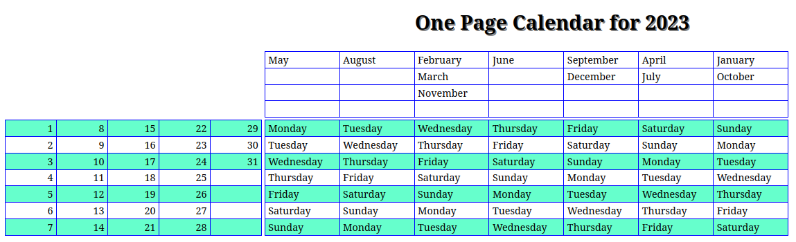
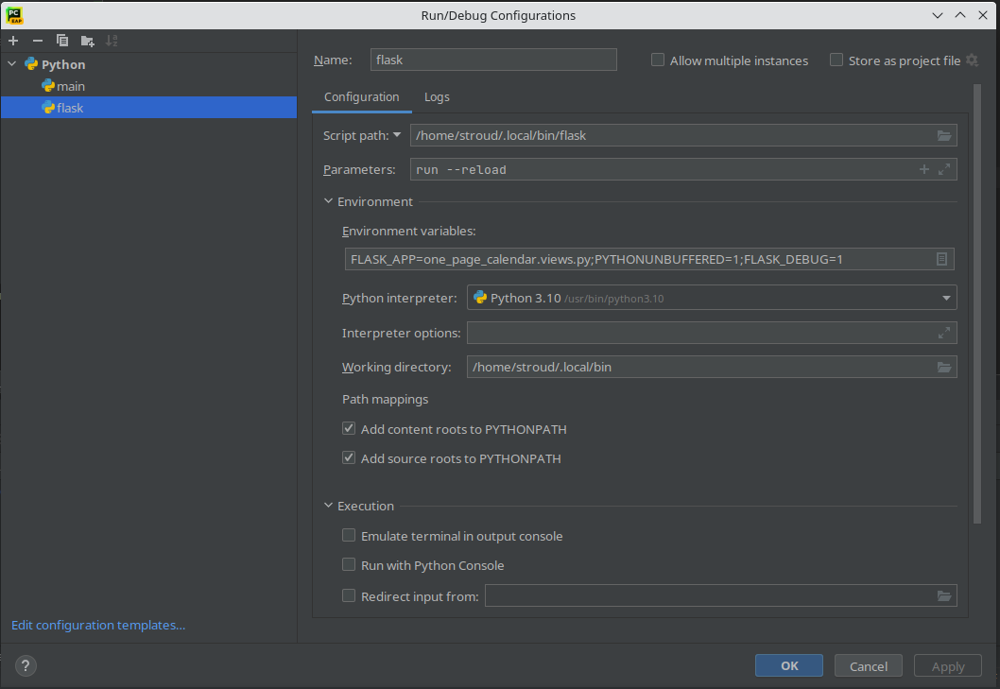

Welcome to Flask One Page Calendar’s documentation!
Contents:
Flask One Page Calendar
This project is implemented as a small web app using the Flask framework. It implements a calendar format that presents an entire year in a concise format on a single page. I discovered this format at the following link
This one page calendar will change how you view the year <https://bigthink.com/starts-with-a-bang/one-page-calendar/>.
I thought it would be interesting to implement this calendar format in Python. The calendar is represented as three two dimensional numpy arrays, since numpy’s slicing ability allows easy access to both the rows and columns of a grid. I decided to implement the calendar as a Flask app, since I was in the process of learning this framework. Below is an image of the calendar as it is rendered in this application. The calendar consists of three sections: the Month grid at the upper right, the Day of Month grid at the lower left and the Day of Week grid at the lower right. T he Day of Month and Day of Week grids are invariant from year to year, thus they are implemented as class attributes in the one_page_calendar.model.OnePageCal class. Each month is assigned to a column in the Months grid that corresponds to the day of the week of the first day of the month, as those days are listed across the top row of the Day of Week grid. This arrangement will vary from year to year, thus this grid is implemented as an instance attribute.
This calendar can be used in at least two ways: to find the days of the month on which a given day of the week falls, or to find the day of the week of a particular day of the month. To use the first method:
locate the month in question in Month Grid and note the column in which it occurs.
trace down the column and find the day of the week question and note the row in which it occurs.
the days of the month on which this day falls will be listed in the corresponding row of the Day of the Month grid, disregarding days that are not in the month in question, for instance 31 for April, June, September and November.
To use the second method: * locate the month in question in Month Grid and note the column in which it occurs. * locate the day of the month in question in the Day of Month grid and not the row in which it occurs. * The day of the week on which the day of month in question falls will be found at the intersection of the Month Grid column and Day of Month grid row.
After starting the Flask development server with one_page_server.views as the application, the URL 127.0.0.1:500/one-page-calendar/<year> will display the calendar for a given year. See below for the Pycharm Run/Debug Configuration.
This application consists of two pages, both of which display the calendar at the top of the page. The initial page displays of form below the calendar that allows the user demonstrate the methods detailed above by selecting a month and either an cardinal number and a day of the week or and day of the month, then clicking the submit button. This will display the second page, in which the appropriate month, day of the week and day(s) of the month will be displayed in red. Additionally, below the calendar the determined month, day(s) of the month and day of the week will be displayed in a text format, along with a link leading back to the initial page. Additionally, in the calendar display the determined month, day of week and days(s) of the month will be displayed in red.
Except for the use of an out 2 x 2 table to handle alignment, the display atttributes are controlled by CSS. The appearance is very basic, but my attempt to use the Flask Bootstrap extension ran into the a problem: retrieving the labels for the form fields returned an empty string. I will probably look into this in the future, as I like the Bootstrap look.
Although this application is pretty simple, it exercises a number of Flask and Jinja2 features. I am working my way though a book on Flask, but the examples for forms provided are pretty trivial (at least to point I’ve read), so I had to go spelunking through the Flask documentation to make this app functional. One very useful thing I found is the cycler function, which produces and interator that cycles through a declared set of values. I used this function to implement the alternating background on the Day of Month and Day of Week grid rows and to generate Day of Week cell classes that reflect the column number of the entry. The classes are referenced in the CSS style sheet to display the determined day of the week in red. For details see one_page_calendar/templates/calendar-result.html
The source for this app is available at my github repository<https://github.com/stroudcuster/one-page-calendar>